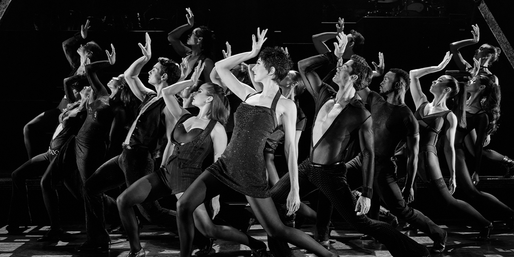
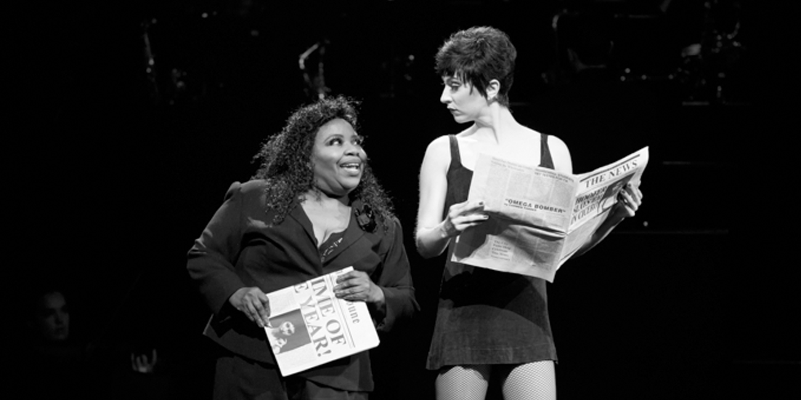

sub1_main
재즈와 살인 그리고 관능으로
유혹하다

전 세계적으로 열광적인 반항을 불러일으키고 있는 뮤지컬 <시카고>의 근원을 따지려면 한참을 거슬러 올라가야 한다. 1926년 세간의 관심을 모았던 쿡 카운티의 공판에서 영감을 얻은, '시카고 트러뷴'지의 기자였으며 희곡작가였던 모린 달라스 왓킨스(Maurine Dallas Watkins)가 쓴 연극 <시카고 (원제: A Brave Little Woman)>가 그것이다. 이 작품의 열광적인 호평이 바탕이 되어 1927년 무성영화 <시카고>와 1942년 극 중 여주인공의 이름을 딴 <록시 하트(Roxie Hart)>가 연이어 제작되면서 빅히트를 쳤다. 왓킨스의 원작은 특정한 시대를 배경으로 하고 있지만, 날카로운 풍자와 위트를 지닌 <시카고>는 언론과 사회의 속성에 대한 예지적인 시선으로 시대를 초월하는 명작의 반열에 오를 수 있었다.
브로드웨이 뮤지컬의 신화적 존재였던 밥 파시(Bob Fosse) 또한 이러한 점을 놓치지 않았다. 1975년 그는 존 캔더(John Kander)와 프레드 앱(Fred Ebb)과 함께 20년대 격동기의 미국, 그중에서도 농염한 재즈선율과 갱 문화가 발달하던 시카고의 어두운 뒷골목에 관능적 유혹과 살인이라는 대중적 테마를 결합해서 브로드웨이 뮤지컬 <시카고>를 만들어내어 관객들을 사로잡았다. 위트 있는 가사와 재즈 특유의 농익음이 묻어나는 매력적인 멜로디, 그리고 파시만이 표현할 수 있는 관능미 넘치는 안무는 이 작품의 진가를 확인시켜주면서 대성공으로 이어졌고, 뮤지컬 <시카고>는 898회나 공연하며 70년대 브로드웨이를 대표하는 뮤지컬로 손꼽히게 되었다.
<시카고>의 생명력은 여기서 끝나지 않았다. 1996년 연출가 월터 바비는 밥 파시가 브로드웨이 뮤지컬 계에 기여 했던 공헌뿐 아니라 예술가로서 열정적인 삶을 살고 간 그의 인생 전체에 대한 경의를 표하고자 했고, 재능 있는 안무가 앤 레이킹(Ann Reinking)과 함께 뮤지컬 <시카고>의 리바이벌 공연을 계획한다. 1996년 11월, 수백만 달러를 들여 조면, 무대장치 등을 재정비하여 Richard Rodgers Theater에서 재공연을 가진 <시카고>는 파시의 작품 같지만 75년도의 무대와는 완전히 다르게 진일보한 작품으로 평가받으며 브로드웨이 뮤지컬 계의 태풍의 눈으로 자리 잡기 시작했다. 그 이듬해에는 초연 당시 뛰어난 작품성에도 불구하고 <코러스라인>에게 넘겨줘야만 했던 토니상(Tony Award) 중 리바이벌 뮤지컬 상, 연출상 등 6개 부문이나 휩쓰는 기염을 토하며 최고의 인기를 누리게 되었다. 브로드웨이에서의 <시카고>의 성공은 곧바로 웨스트엔드로 이 작품을 진출시켰다. 1997년부터 웨스트엔드 아델피 극장에서 공연된 시카고는 영국의 대표적 공연물에 주는 상인 올리비에 상의 베스트 뮤지컬 제작상 등 2개 부문을 수상하며 까다로운 영국 공연계에서 롱런의 대열에 합류하였다.
뮤지컬<시카고>는 미국 브로드웨이에서 25년간 10,000회 이상 공연되며, 브로드웨이 역사상 가장 롱런하고 있는 미국 뮤지컬로 기록되고 있다. 그뿐만 아니라 Tony, Drama Desk, Olivier Awards 등 전 세계 최고 권위 시상식에서 55개 부문 이상 수상하며 작품성까지 인정받았다. 뮤지컬 <시카고>는 미국을 넘어 영국, 캐나다, 호주, 독일, 일본 등 전 세계 36개국 500개 이상 도시에서 32,500회 이상 공연되었고 3,300만 명이 넘는 관객이 관람한 스테디셀러 뮤지컬이다.
BROADWAY'S BEST BET
성공하는 뮤지컬의 일반적인 공식을 따르지 않은 컨셉 뮤지컬
뮤지컬 <시카고>는 정상적인 기승전결의 플롯 구조를 갖추기보다는 아주 비사실적이고 양식적인 방법으로 주제를 부각시키고, 이야기 전개보다 표현 방식을 부각시키는 컵셉 뮤지컬 형식을 가지고 있다. 이것이 바로 뮤지컬 <시카고>가 다른 공연과 차별화되는 점이다. 또한 뮤지컬 <시카고>에서는 벨마라는 극 중 인물이 사회자 역할도 함께 하며 관객들의 몰입을 방해하고, 마치고 브레히트 연극처럼 '이 상황이 얼마나 웃깁니까'라고 설명하며 주제를 부각시키는 서사극 형식을 취한다. 여기에 미국의 20년대 시절을 대표하는 보드빌 형식의 무대와 재즈퐁의 음악이 밥 파시의 안무와 절묘한 조화를 이루며 뮤지컬 <시카고>만의 독특한 형식이 완성되었다.
성공하는 뮤지컬의 일반적인 공식을 따르지 않은 컨셉 뮤지컬
뮤지컬 <시카고>는 '제2의 캬바레'로 불린다. 그도 그럴 것이 <시카고>의 제작진인 파시, 캔더, 엡이 모두 뮤지컬 <캬바레>에 참여했던 '캬바레 팀'으로 그들이 다시 뭉쳐 만든 뮤지컬이기 때문이다. 또한 그들은 뮤지컬 <캬바레>를 통해 보여줬던 통렬한 사회비판 정신을 <시카고>에서도 그대로 계승하고 있다. '살인, 욕망, 부패, 폭력, 착취, 간통, 배신'이라는 뮤지컬 <시카고>의 선전 문구처럼 <시카고>에는 20년대 당시 미국 사회의 치부에 대한 비판의식이 과감하게 묘사되어 있다.
이른바 '1전 신문(penny paper)'이라 불리며 당시의 언론을 주도하던 극도로 선정주의적이면서도 통속적인 싸구려 저널리즘에 대한 시니컬한 묘사와 풍자, 그리고 O.J.심슨 사건에서도 우리가 한 번 더 느낄 수 있었던 미 형법 제도의 모순을 뮤지컬 <시카고>에서는 신랄하게 꼬집고 있다. 또한 남성 중심의 도덕관과 황금만능주의, 진실보다는 포장을 중시하는 외형주의의 편향된 시각에도 일침을 가하고 있다.
1920년대 시대상을 보여주는 이야기와 표현 방식
돈만 있으면 뭐든지 가능하던 1920년대 시카고, 거리엔 환락이 넘쳐나고 마피아가 지하세계의 돈으로 도시를 장악했던 시절, 살인을 저지르고서도 스타가 되길 꿈꾸는, 어처구니없는 현실이지만 당시에는 있을법한 사람들의 이야기를 뮤지컬 <시카고>에서는 위트 있게 그려내고 있다. 또한 시가, 권총, 살인, 갱, 무법천지, 보드빌, 재즈, 애교 가득한 여성 등 20년대 시카고를 대표하는 상징물들이 뮤지컬 <시카고>에는 가득하다. 이처럼 뮤지컬 <시카고>는 시종일관 어두운 20년대 미국의 현실에 국한하여 이야기하고 있는 것 같지만 그 주제나 음악, 춤, 세트, 의상, 조명등의 표현 방법은 현재 우리 한국의 이야기, 전 세계의 이야기로 해석해도 좋을 만큼 시사적이고 현대적이다.
뮤지컬 <시카고>는 등장인물들이 관객들에게 직접 이야기를 건네기도 하는 등 서사극적 특성을 적극적으로 살려내면서, 여타 뮤지컬에서 보이는 치장이 많고 화려한 사실적인 세트가 아닌 단순한 세트와 강렬한 조명만으로 움직이는 연기자들의 춤, 연기와 드라마에만 자연히 눈과 귀를 모으게 하는 특별한 컨셉뮤지컬 형식을 취한다. 군더더기 없는 무대 위에서 흐느끼는 듯 절규하는 재즈가 흐르고, 단순하면서도 상징적인 의상을 입은 연기자들의 관능적인 춤이 무대를 채워나가면서, 때로는 커칠게 때로는 코믹하게 야유하고 조롱하며 사회의 위선을 적나라하게 고발하는 드라마를 펼쳐 보인다.
활력있고 감미로운 재즈의 향연
작품의 메인 테마인 "All That Jazz"에서 보여주듯 뮤지컬 <시카고>의 음악은 재즈풍이 지배적이다. 작품의 배경인 1920년대 미국 시카고의 클럽이고 그 시대 시카고의 소위 '대중가요'가 바로 그런 클럽에서 연주되었던 재즈였기 때문이다. 15인조 구성되어 있는 뮤지컬 <시카고>의 밴드는 튜바, 트럼펫 등의 미국적인 사운드를 표현하는 악기들로 편성되어 있다. 이들은 다른 공연과 달리 무대 정중앙에 계단형으로 위치하여 제2의 배우 역할을 하며 극에 참여하기도 한다. 특히 지휘자가 익살맞게 배우들과 대사를 주고받는 모습과 막간에 연주되는 신나는 밴드의 애드립은 뮤지컬 <시카고>의 특별한 즐거움이다.
밥파시의 숨결이 그대로 묻어나는 안무
뮤지컬 <시카고>는 밥 파시에 의해 탄생하였고 그의 독특한 안무로 세계인의 주목을 받게 되었다. 밥 파시의 안무의 특이한 점은 그가 자신의 결점으로부터 그만의 독특한 스타일을 창조해 내었다는 점이다. 안짱다리로 발을 바깥쪽으로 턴 아웃 하는 데 어려움을 느꼈던 그는 오히려 그 결점을 이용하여 크고 시원시원한 동작들보다는 꾸부정하면서도 소소한 근육들의 움직임을 시각화하는 독특한 스타일을 만들어내었다. 또한 대머리였던 자신의 머리를 감추기 위해 이용했던 검은색 모자는 이제 그의 춤에서는 빠질 수 없는 중요한 소품이 되었다. 파시의 춤은 심플하면서 드라마틱하고 섹슈얼리티한 안무의 진수를 보여준다. 앤 레인킹이 1996년 재현한 뮤지컬 <시카고>는 밥 파시 스타일의 안무 중 이 작품의 클라이막스인 벨마와 록시가 공연의 마지막에 함께 춤을 추는 'Hot honey rag'는 특히 밥 파시의 1975년 초연의 안무를 그대로 가져온 것으로 더욱 눈여겨볼 만 하다. 그 외에도 화려한 의상 없이 심플하고 섹시한 의상을 입은 여배우들과 단단한 근육질의 몸매를 적나라하게 드러내는 섹시한 남자 배우들이 보여주는 밥 파시의 절도 있고 관능적인 춤은 <시카고>에서만 만끽할 수 있는 즐거움을 선사한다.